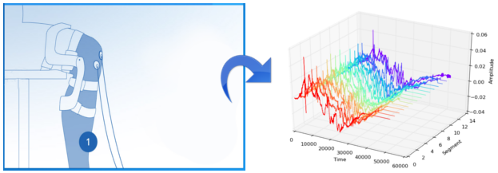
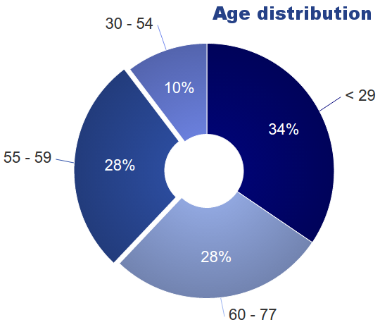
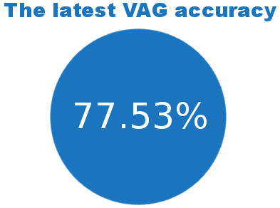

Your browser doesn't support the features required by impress.js, so you are presented with a simplified version of this presentation.
For the best experience please use the latest Chrome, Safari or Firefox browser.
Efficient methods of data acquisition and visualization in Vibroarthrography
Leysan Nurgalieva
Supervisor: prof. Yannis Velegrakis
Co-supervisor: Dr.-Ing. Oussama Jarrousse
Knee Osteoarthritis (OA)
Chondromalacia and 4 stages of Osteoarthritis
Chondromalacia and 4 stages of Osteoarthritis
OA Statistics
The main cause of disability among > 50 age
The Method
Non-invasive diagnostic tool recording acoustic signals from the human knee during the movement of the leg to detect articular cartilage degeneration

Vibroarthrography Project

Project objectives
- Signal analysis on more samples;
- Sensors and mechanical components;
- Graphical user interface;
- Consumer-oriented product development.
Contribution and Objectives

- Systematize self-reported data
- Measurement procedure support for patients and medical staff
- Making VAG graphs clearer for patients through interactive medium
- Tablet Computer application
Why it was hard

- 35 - 40 patients a day
- Literature review: focus on signals but not on the process
User studies
Focus groups
Requirement Analysis
Two Main Problems

Patient Engagement
Examination process
Communication through visualization
Visually and interactively communicate key messages to end users using a web-based graphical interface
Web Server + MySQL
Database (signals) +
Python scripts + iPad
web application
Infographics
Patient preparation
Short video instructions
What to show?
A choice of plots
Low and high energy produced by deformation of elastic medium - human knee and flash;
Knee "up" and "down" producing vibrations, dynamics of movement;
Spectrogram: higher and lower frequencies.
Data representation
Healthy - Results
A medium to explan
Mental Closure
Final report "to go"
Conclusions and Future Work
Results
VAG examination impressionn
VAG Company - market interest
Limitations and
improvement

Ongoing research project
Healthy - Unhealthy representation
Future opportunities

Adaptive interface and machine learning